Step 01
Start a trip
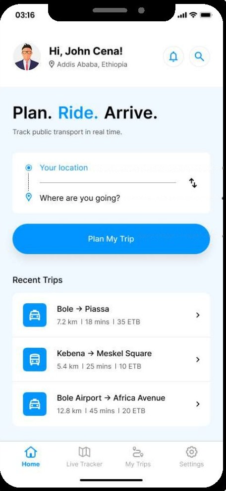
1231Enter your current location2Enter your destination3Plan your trip
Case study · Mobile app
A mobile app that makes commuting in the city faster, more reliable and less stressful. It combines real-time bus, taxi and train tracking with smart trip planning, so people can find the best route, save frequent trips and get live updates before and during travel.
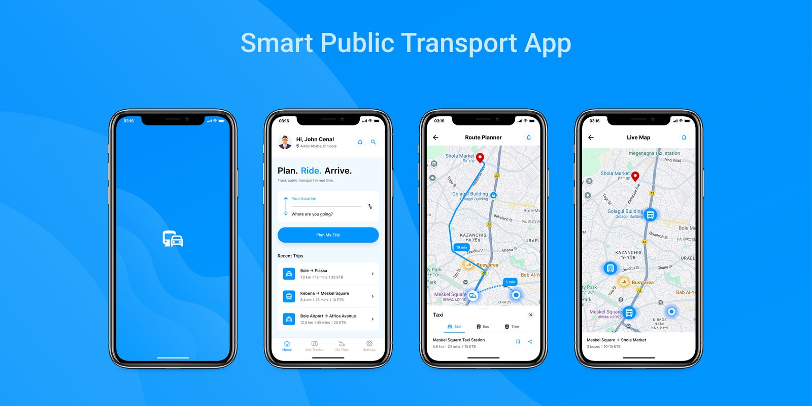
From entering a destination to arriving, in five screens. Numbers on each screen match the notes beside it.
Step 01

123Step 02
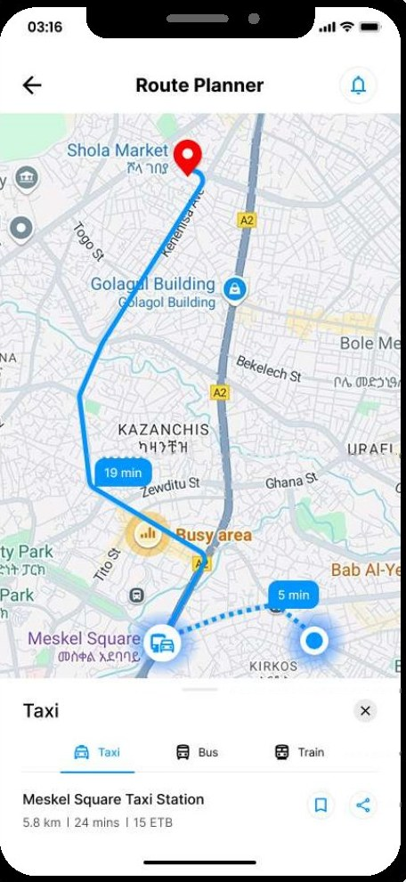
1234Step 03
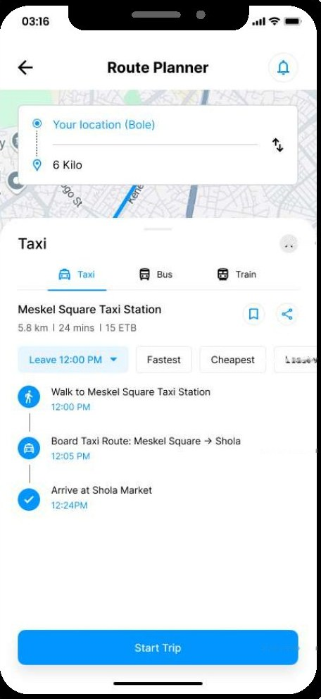
1234Step 04
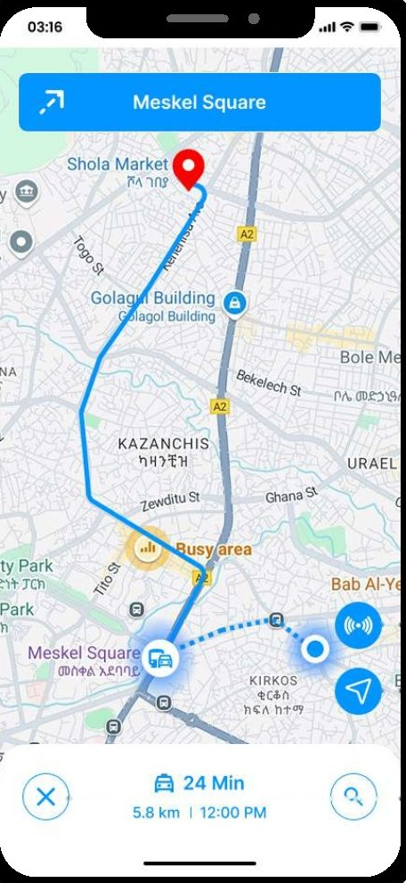
123Step 05
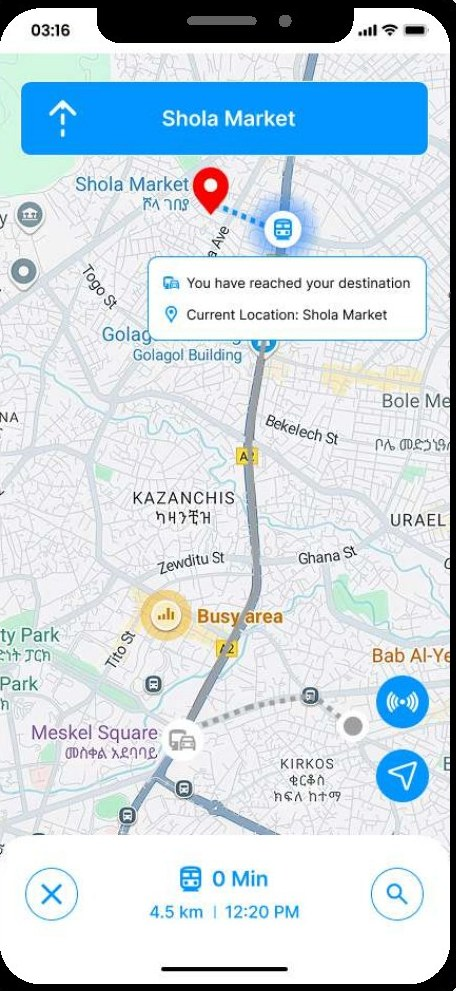
1Find a vehicle on the map and follow it in real time, in four screens.
Step 01
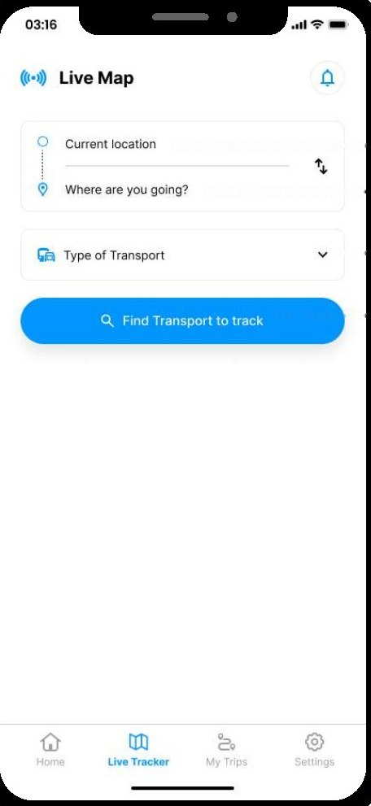
1234Step 02
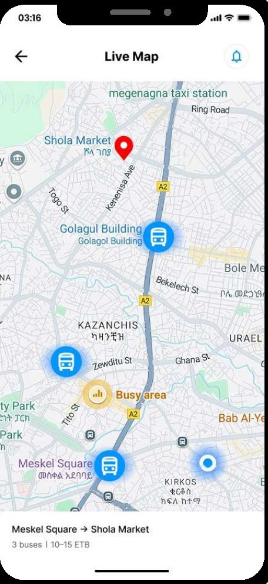
1Step 03
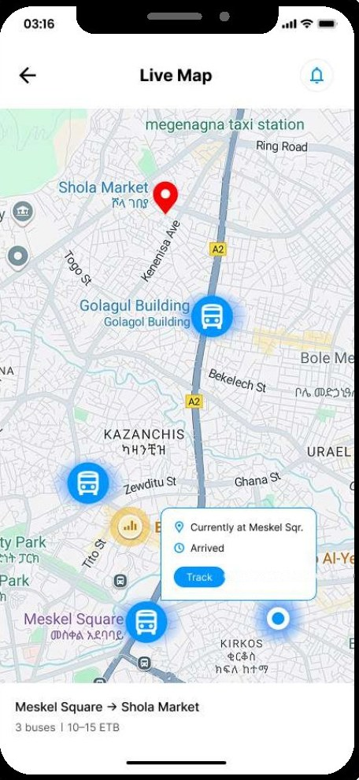
1Step 04
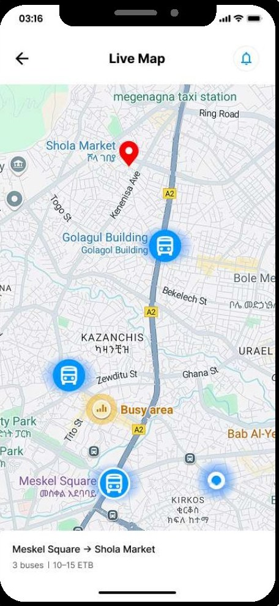
1The visual language of the product: color, type, icons and the components that repeat.
Aa
Plan. Ride. Arrive.
Track public transport in real time.
Outline icons for navigation (home, live tracker, trips, settings). Transport modes use white glyphs on blue rounded squares, so taxi, bus and train read at a glance. The active tab turns blue.
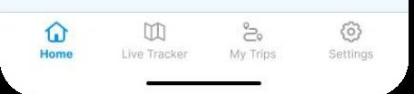
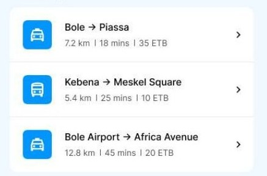
Usability principles behind the screens, and where they show up.
Live vehicle positions, minutes-to-arrival tags on the map and a clear tracked state keep riders informed while they travel.
Recent trips and saved routes put frequent journeys one tap away, so people don't retype them.
The trip sheet can be collapsed, a route can be saved or shared, and a trip can be ended at any time.
One tab bar, one blue accent and one icon style across the home, planner and live map.
I designed all 35 screens in Figma, then built the app in React Native with Expo, using free tools only.